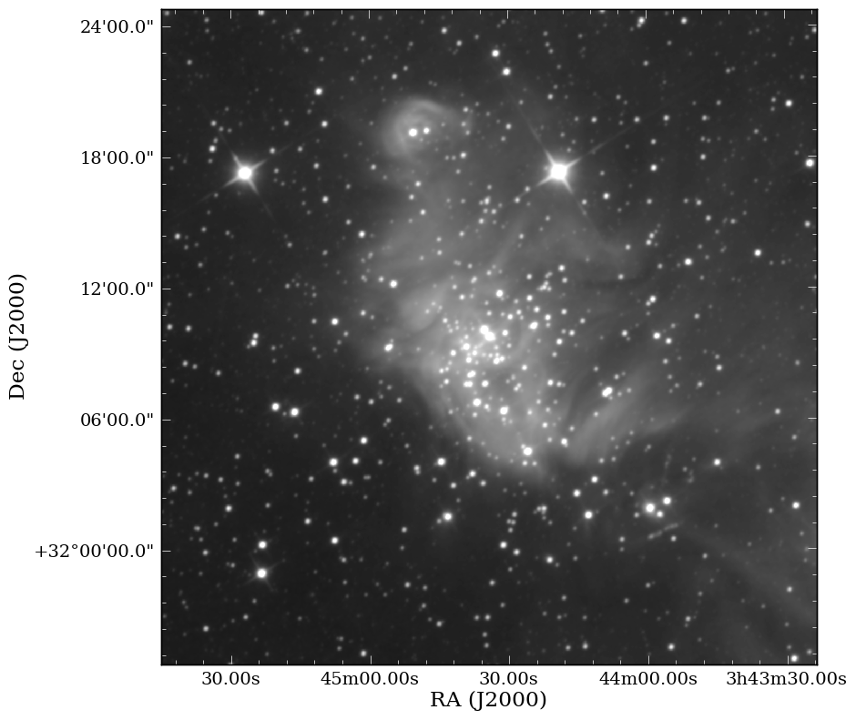
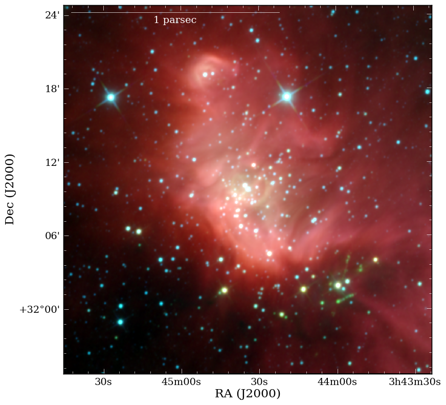
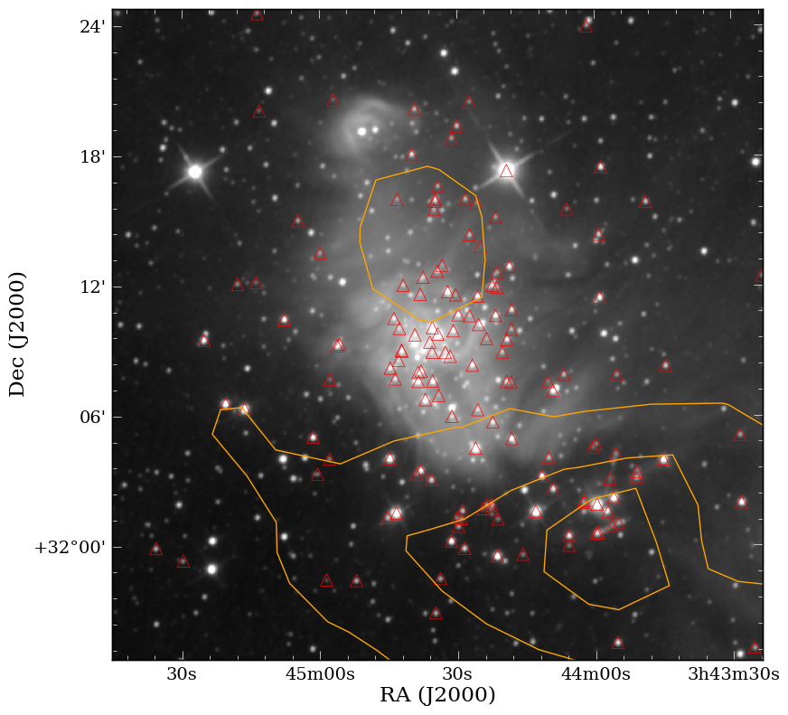

{kind=link}
{kind=link}
{kind=link}
{kind=link}
{kind=link}

APLpy (the Astronomical Plotting Library in Python) is a Python module aimed at producing publication-quality plots of astronomical imaging data in FITS format. It effectively provides a layer on top of Matplotlib to enable plotting of Astronomical images, and allows users to:
The APLpy Documentation contains all the information needed to run APLpy successfully. The most important page is the Quick Reference Guide which provides concise instructions for all of the APLpy functions.
Start off by downloading this tar file, expand it, and go to the ic348_wise directory on the command line. Then, launch pylab:
$ ipython --pylab
If you have trouble downloading the file, then start up IPython (ipython -pylab) and enter:
import urllib2, tarfile
url = 'http://python4astronomers.github.com/_downloads/ic348_wise.tar'
tarfile.open(fileobj=urllib2.urlopen(url), mode='r|').extractall()
cd APLpy-example
ls
Import the aplpy module (note the lowercase module name):
import aplpy
And create a new figure to plot the FITS file with:
# Launch APLpy figure of image
img = aplpy.FITSFigure('w1.fits')
# Apply grayscale mapping of image
img.show_grayscale()
# Or apply a different stretch to the image
img.show_grayscale(stretch='arcsinh')
# Specifically specify lower and upper limit
img.show_grayscale(stretch='arcsinh', vmin=1, vmax=290)
# Display a grid and tweak the properties
img.show_grid()
# Modify the tick labels for precision and format
img.tick_labels.set_xformat('hhmm')
img.tick_labels.set_yformat('ddmm')
# Move the tick labels
img.tick_labels.set_xposition('top')
img.tick_labels.set_yposition('right')
img.save('ic348_basic.eps')
The latter is recommended because it will automatically figure out the best resolution with which to output your plot. Your plot should look something like this:
Now let’s do something a bit more advanced where we’ll make a color image from the fits files and plot some extra features on top of it. If you cannot get Montage and python-montage installed, then you can use the already produced files to follow along with the exercise:
import aplpy
# Make RGB cube - images do not need not to have the same WCS
aplpy.make_rgb_cube(['w3.fits','w2.fits','w1.fits'], 'cube.fits')
# Make RGB image - you can specify color parameters here
aplpy.make_rgb_image('cube.fits','rgb_image_linear.png')
# Customize it
aplpy.make_rgb_image('cube.fits','rgb_image_arcsinh.png',
stretch_r='arcsinh', stretch_g='arcsinh',
stretch_b='arcsinh')
# Launch APLpy figure of 2D cube
img = aplpy.FITSFigure('cube_2d.fits')
img.show_rgb('rgb_image_arcsinh.png')
# Maybe we would like the arcsinh stretched image more?
img.show_rgb('ic348_color_arcsinh.png')
# Modify the tick labels for precision and format
img.tick_labels.set_xformat('hhmmss')
img.tick_labels.set_yformat('ddmm')
# Let's add a scalebar to it
img.add_scalebar(5/60.)
img.scalebar.set_label('5 arcmin')
img.scalebar.set_color('white')
# We may want to lengthen the scalebar, move it to the top left,
# and apply a physical scale
img.scalebar.set_corner('top left')
img.scalebar.set_length(17/60.)
img.scalebar.set_label('1 parsec')
img.save('ic348_color_arcsinh.pdf')
Your final color plot should look something like this:
We’re ready at this point to start making science-grade plots with APLpy with contours and markers:
import aplpy, atpy
# Launch APLpy figure of image
img = aplpy.FITSFigure('w2.fits')
# Apply grayscale mapping of image
img.show_grayscale()
# Or apply a different stretch to the image
img.show_grayscale(stretch='arcsinh')
# Specifically specify lower and upper limit
img.show_grayscale(stretch='arcsinh', vmin=10, vmax=180)
# Modify the tick labels for precision and format
img.tick_labels.set_xformat('hhmmss')
img.tick_labels.set_yformat('ddmm')
# ATpy to pull in sources
# If you want to see what columns are available - type t.describe()
t = atpy.Table('per_ysoc_c2d.fits')
# Now, let's display the young stellar objects (YSOs) in the region
# using c2d Spitzer data
img.show_markers(t.ra, t.dec)
# But let's make the markers bigger and triangles instead
# Before we can do that we need to list the layers
img.list_layers()
img.remove_layer('marker_set_1')
# Now we add the new markers
img.show_markers(t.ra, t.dec, marker='^', s=100)
# Let's add a contour from Av map of the region from COMPLETE Survey
img.show_contour('per_extn2mass.fits', levels=[8,7,6,5,4], colors='orange')
img.save('ic348_marker_contour.png')
The science-grade plot should look something like this:
Exercise 1
Use the help or ? functionality in ipython to figure out how to reproduce (within reason) the image below. Additionally, using the tabbing feature to see what other methods are available is key for this exercise. Use the Quick Reference Guide for other information that may be helpful.
Click to Show/Hide Solution
import aplpy
import atpy
# Exercise
img = aplpy.FITSFigure('per_av_j2000.fits')
# Identical to show_grayscale
img.show_colorscale()
# Recenter the image with a defined width of 5 degrees
img.recenter(54.51, 31.39, radius=2.5)
# Show the grid
img.show_grid()
# Define tick label style
img.tick_labels.set_xformat('hhmm')
img.tick_labels.set_yformat('ddmm')
img.show_colorbar()
# Read in table using atpy
t = atpy.Table('per_ysoc_c2d.fits')
# Plot markers
img.show_markers(t.ra, t.dec, facecolor='black', edgecolor='none', s=20)
img.save('ic348_av_markers.png')
With APLpy we’re able to make subplots within a figure just like Matplotlib and we can pull in a DS9 region files. Unfortunately, there is a bug in the official pyregion release, so it’s suggested that you download the latest development version here. Use pip to install the package like the following.:
$pip install pyregion/ --user --upgrade
Now, let’s work on a example that shows both capabilities below:
import aplpy
import pyfits
import matplotlib.pyplot as mpl
fig = mpl.figure()
# Initiating first subplot
f1 = aplpy.FITSFigure('w4.fits', figure=fig)
f1.show_grayscale()
# Load a regions file into APLpy plot
f1.show_regions('bowshock.reg')
# Modify the tick labels for precision and format
f1.tick_labels.set_xformat('hhmmss')
f1.tick_labels.set_yformat('ddmm')
# Initiating second subplot
f2 = aplpy.FITSFigure('w4_bw1.fits', figure=fig,
subplot=[0.25,0.15,0.11,0.15])
f2.show_colorscale(cmap = cm.jet)
# Hiding the ticks, tick labels (numbers) and axis labels (e.g. RA & Dec.)
f2.ticks.hide()
f2.tick_labels.hide()
f2.axis_labels.hide()
# Another way of adding a subplot to the figure
d = pyfits.getdata('w4_bw2.fits')
f3 = fig.add_axes([0.25,0.7,0.15,0.15])
f3.imshow(d, origin='lower left', cmap=cm.jet)
f3.axes.get_xaxis().set_visible(False)
f3.axes.get_yaxis().set_visible(False)
fig.canvas.draw()
fig.savefig('subplots.pdf', bbox_inches='tight')